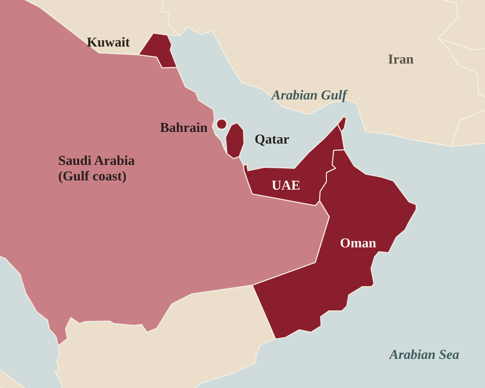
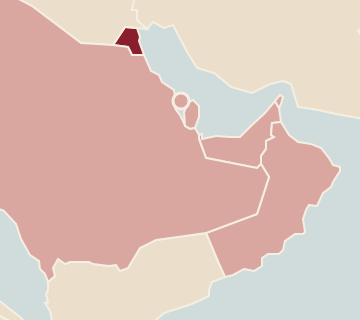
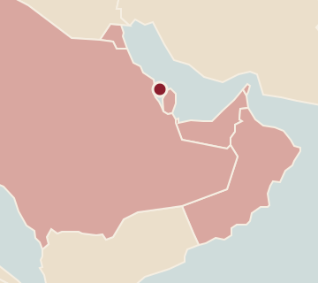
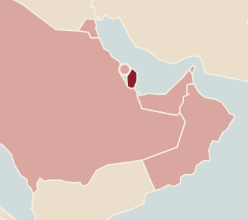
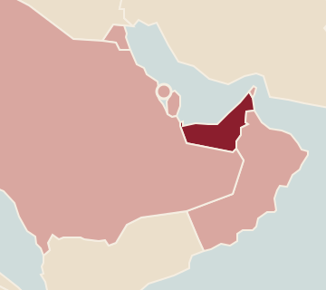
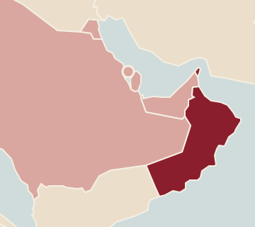
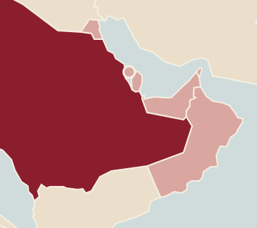
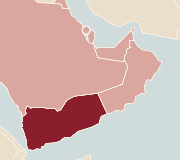

When I told friends our group was studying Dubai, most of them pictured the Burj Khalifa, luxury malls and sports cars. That picture is real, but it is only one city in one country. Our project looks at the wider Khaleeji region, and at the food that tells a much older story about the people who live there.
What does “Khaleeji” mean?
Khaleej is the Arabic word for “gulf,” so Khaleeji simply means “of the Gulf.” It describes the people and culture of the countries along the Arabian Gulf: Kuwait, Bahrain, Qatar, the United Arab Emirates, Oman, and the eastern Gulf coast of Saudi Arabia. They are separate countries, but they share a Gulf Arabic dialect, similar traditional dress (the kandura or thobe for men and the abaya for women), music, and a history shaped by two things: the desert and the sea.

Two roots: the desert and the sea
Before oil, life in the Gulf followed two very different patterns. Bedouin tribes in the desert moved with their camels and goats and lived on food that traveled well, mostly grains, dates and date syrup. Food was scarce, so meals were large shared pots meant to stretch a little across many people. On the coast, settled towns lived from fishing, trade and pearl diving. Divers spent months at sea on wooden boats called dhows, and coastal families ate mostly seafood flavored with spices that arrived by boat (Seasoned Traveller).
Those two roots still show up on the table today: dates and sharing from the desert, and fish, rice and spices from the sea.
The countries, one by one

Kuwait
Capital: Kuwait City · Independent 1961
A small country at the northern tip of the Gulf. Before oil it lived from pearling, sea trade and building dhows. Machboos is its national dish, and the diwaniya, an evening gathering where hosts serve coffee to guests, keeps hospitality at the center of social life.

Bahrain
Capital: Manama · Island kingdom
An island kingdom just off the Saudi coast and the first place on the Arab side of the Gulf to strike oil, in 1932. Bahrain was the pearling center of the Gulf; its Pearling Path in Muharraq is a UNESCO World Heritage site, and the pearl divers’ music, fjiri, joined UNESCO’s intangible heritage list in 2021 (The National).

Qatar
Capital: Doha · Independent 1971
A peninsula in the middle of the Gulf that went from a pearling and fishing coast to a global hub that hosted the 2022 FIFA World Cup. Doha rebuilt Souq Waqif, its old market, after a fire in 2003 (Seasoned Traveller), and its spice stalls keep traditional food culture alive inside a modern city.

United Arab Emirates
Capital: Abu Dhabi · Founded 1971
A federation of seven emirates, including Abu Dhabi and Dubai. Dubai’s skyline is the image most people have of the whole Gulf, which is exactly the image our project tries to look past. The UAE helped add Arabic coffee and Al Sadu weaving to UNESCO’s lists, and luqaimat fill its markets every Ramadan.

Oman
Capital: Muscat · Seafaring empire
Oman guards the mouth of the Gulf. In the 1800s its sultans ruled Zanzibar in East Africa and even moved their capital there in 1840 (Culture Trip). Guests are still welcomed with Omani kahwa, dates and sweet halwa.

Saudi Arabia’s Gulf coast
Eastern Province · Dammam, Khobar, Al-Ahsa
Only Saudi Arabia’s eastern side is part of the Khaleeji region. Saudi oil was first struck here, at Dammam, in 1938. Inland, the Al-Ahsa oasis is one of the largest date palm oases in the world and became a UNESCO World Heritage site in 2018 (Arab News).

Yemen, the Gulf’s neighbor
Capital: Sana’a · Southern Arabian Peninsula
Yemen is not usually counted as Khaleeji because it does not sit on the Gulf, but its people and food have moved through the region for centuries. Mandi, from Yemen’s Hadhramaut region, is now everyday food across the Gulf, which is why our group chose a Yemeni restaurant for our visit.
Trade routes that seasoned the Gulf
The Gulf was never isolated. By the 18th century, dhows sailed regularly between the Gulf and India, Persia, East Africa and the Levant. Turmeric and spiced rice dishes came from India, dried black lime (loomi) and saffron from Persia, and slow-cooked meats from Yemen (Seasoned Traveller; National Geographic). The “traditional” Khaleeji kitchen is really a mix of every port Gulf sailors traded with.
From pearls to oil to a global table
For about a hundred years, pearl diving was the backbone of the Gulf economy. When cheaper cultured pearls flooded the market in the 1930s, the industry collapsed. Oil changed everything that followed. Oil wealth brought waves of migrant workers, first from Egypt, Lebanon and Palestine and then from South and Southeast Asia, and they brought karak tea stands, curry houses and bakeries with them. In Qatar, international migrants made up nearly 78% of the population by 2019.
My takeaway: As an international student myself, I recognized this story. When a place fills with people from everywhere, food becomes both the thing that changes fastest and the thing people hold on to hardest. That tension is what the rest of our blog explores.
References
Arab News. (2018, June 30). Saudi Arabia’s Al-Ahsa desert oasis becomes UNESCO World Heritage site. Arab News. https://arabnews.com/node/1330561
Culture Trip. (n.d.). Did you know the capital of Oman was once in Zanzibar’s Stone Town? https://theculturetrip.com/middle-east/oman/articles/did-you-know-the-capital-of-oman-was-once-in-zanzibars-stone-town
The National. (2022, January 21). What is fjiri? Bahrain’s pearl divers created a world-renowned musical tradition. The National. https://www.thenationalnews.com/weekend/2022/01/21/what-is-fjiri-bahrains-pearl-divers-created-a-world-renowned-musical-tradition
National Geographic. (n.d.). The Middle East’s smallest state offers some of the region’s biggest flavours. https://www.nationalgeographic.com/travel/article/bahrain-middle-easts-smallest-state-best-food
Natural Earth. (n.d.). Admin 0 countries, 1:110m [Map data]. https://www.naturalearthdata.com/
Pearling Path. (n.d.). Pearling, testimony of an island economy. https://pearlingpath.bh/en/
Seasoned Traveller. (n.d.). Qatar food history. https://seasonedtraveller.com/qatar-food-history